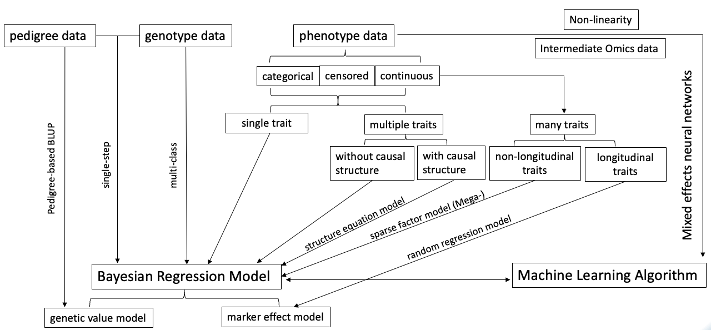
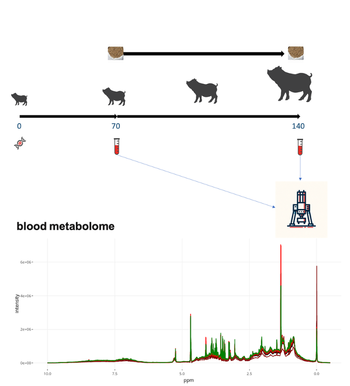
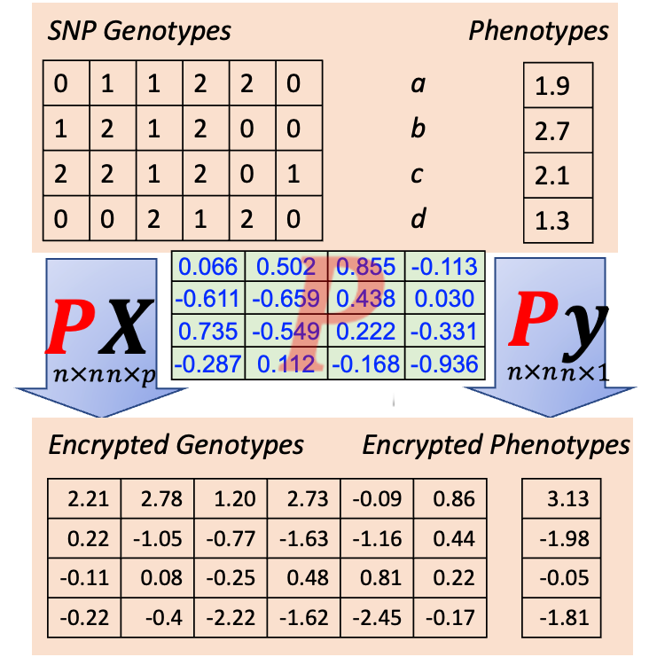
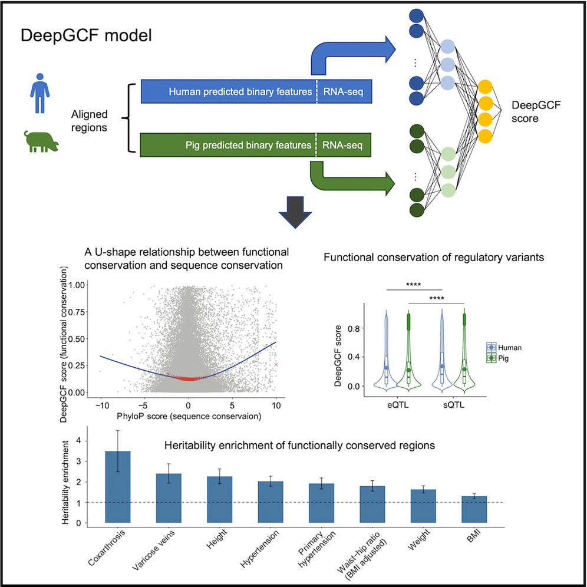

Cheng Lab at UC Davis
Statistical and Quantitative Genetics
Department of Animal Science, UC Davis
Statistical Methods for G2P
Our research primarily focuses on the development of statistical models, theories in quantitative genetics, and the analysis of complex datasets. We have developed statistical methods, computational approaches, and quantitative genetics theories for faster genomic prediction, multi-trait analysis addressing pleiotropy and indirect effects, linkage disequilibrium, integrating mixed models with neural networks to address non-linearity and multi-layer biological data, sequencing strategies, among many others. We have also developed software tools to implement these methods. Many of these innovations are incorporated into the JWAS software tool, which has become a pivotal platform for various research projects in both academia and industry.
Molecular Phenotypes in G2P
Advancements in high-throughput sequencing technologies have greatly expanded the amount and diversity of multi-omics data available for animal studies. Our work involves developing statistical methods and tools, as well as performing data analysis on epigenomic, gene expression, and metabolite datasets. For example, we are involved in USDA-NIFA funded projects in partnership with animal genetics industry to collect metabolite data from their breeding populations, aiming to evaluate the role of metabolite data in Genome-to-Phenome (G2P) research. We also engage in projects that integrate public omic datasets, such as those from FAANG and FarmGTEx, into Agricultural Genome-to-Phenome (AG2P) studies.
Public and Confidential Data
Data sharing and collaboration are increasingly important to enable validation, further research, and joint analysis of multiple datasets. However, these processes are often complicated by limited visibility of public data and confidentiality of private data. I initiated a project to develop platforms and methods for sharing and collaborating on agricultural genome-to-phenome (AG2P) research using both public and confidential data, supported by a USDA-NIFA grant. Our approach includes fostering public data sharing, innovating encrypted data sharing, and enabling collaborative research such as federated and transfer learning. We have developed methods to encrypt genotypes and phenotypes for collaborative analyses and established a Stakeholder Advisory Board to ensure our methods meet the needs of the community.
Machine Learning Beyond Numerical Phenotypes (e.g., Images)
Complex phenotypes are sometimes better understood through images or words rather than through numerical values. We have developed machine learning tools specifically designed to analyze these phenotypes within the context of G2P research.
Machine learning for Basic Science
We explore the application of machine learning in fundamental scientific research, with a focus on the genetic and evolutionary bases of complex phenotypes. For example, we developed a deep learning-based approach to analyze genomic conservation at the functional level across species, specifically examining functional profiles from humans and pigs. This research highlights the significant role of cross-species functional comparisons in understanding the genetic and evolutionary foundations of complex phenotypes. By bridging deep learning, comparative genomics, and quantitative genetics, we aim to uncover fundamental biological mechanisms and evolutionary patterns.
Applied Quantitative Genetics for Various Species
Application of these methods and tools to datasets representing a wide variety of traits across different species, we have applied both known and newly developed methods to analyze datasets from species such as swine, chicken, cattle, trout, maize, walnut, and others. In these analyses, we performed genomic analyses to predict desired traits and infer the underlying mechanisms driving them.
- Trout
- Genome-wide association analysis and accuracy of genome-enabled breeding value predictions for resistance to infectious hematopoietic necrosis virus in a commercial rainbow trout breeding population
- Assessing Accuracy of Genomic Predictions for Resistance to Infectious Hematopoietic Necrosis Virus With Progeny Testing of Selection Candidates in a Commercial Rainbow Trout Breeding Population
- Cattle
- Walnut
- Combining phenotype, genotype and environment to uncover genetic components underlying water use efficiency in Persian walnut
- Quantitative phenotyping of shell suture strength in walnut (Juglans regia L.) enhances precision for detection of QTL and genome-wide association mapping
- Deciphering of the Genetic Control of Phenology, Yield, and Pellicle Color in Persian Walnut (Juglans regia L.)
- Chicken
- Others